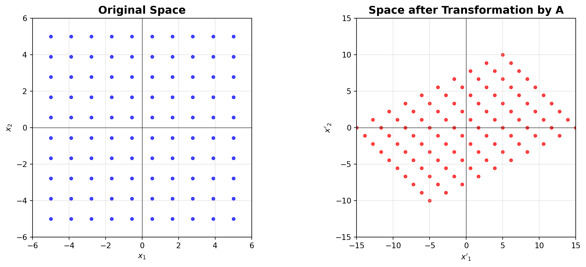
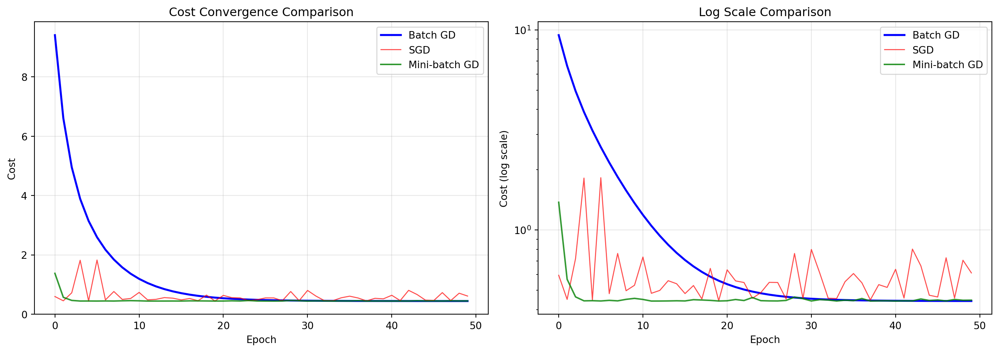
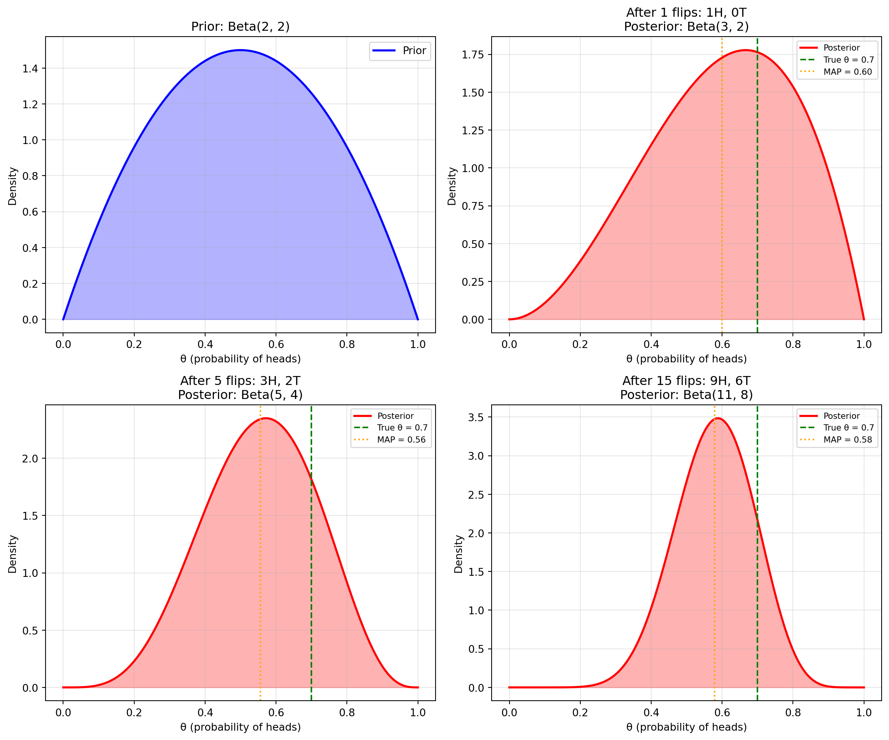
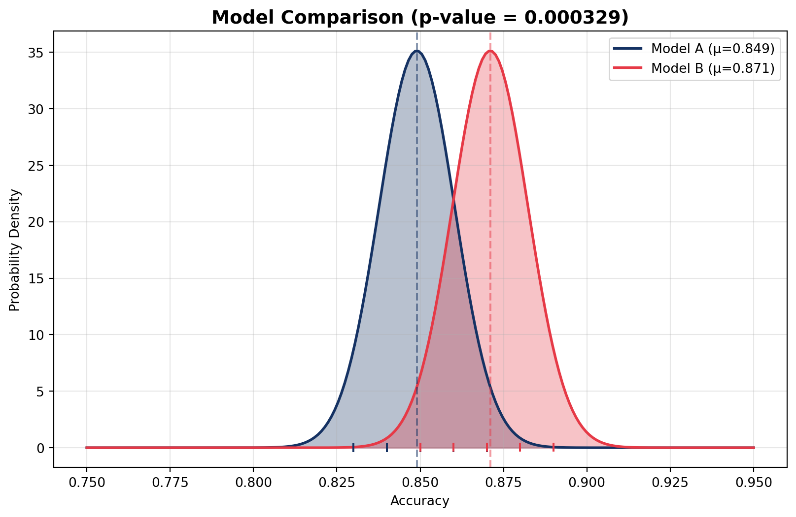
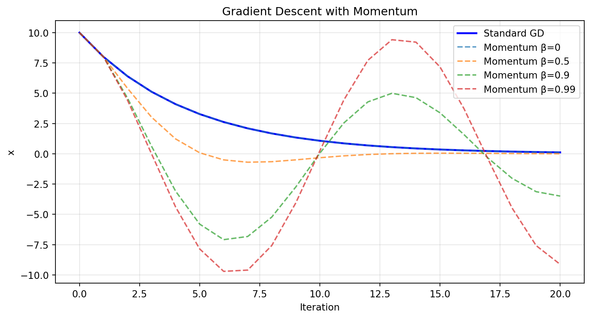

The Geometry of Linear Algebra and the Mechanics of Optimization
Author
AI Mathematics Course
Learning Objectives
By the end of this module, you will be able to:
Visualize matrix operations as transformations of space rather than mere calculations
Compute and interpret eigenvalues and eigenvectors in the context of data analysis
Implement gradient descent from scratch and understand its role in training neural networks
Apply Bayes’ theorem to update beliefs based on new evidence
Use Gaussian distributions to model uncertainty in machine learning predictions
Perform hypothesis testing to statistically compare model performances
Translate mathematical concepts into working Python code using NumPy and Matplotlib
Part 1: Linear Algebra — The Language of AI
1.1 Don’t Just Calculate: See the Matrix
Most of us were taught matrix multiplication using the “row picture”—taking the dot product of rows from the first matrix and columns from the second. It works, but it hides what is actually happening.
In machine learning, we need to shift to the Column Picture.
Instead of computing the dots, think of \(x_1\) and \(x_2\) as weights. The matrix multiplication is simply a linear combination of the columns of \(A\):
The column picture reveals that \(A\mathbf{x}\) is a linear combination of the columns of \(A\), with the entries of \(\mathbf{x}\) as weights. This perspective is fundamental because:
The column space of \(A\) (all possible linear combinations of columns) tells us what outputs are achievable
In neural networks, each layer transforms input data into a new space spanned by its weight matrix columns
Understanding this helps visualize how data is “remixed” at each layer of a deep network
Why is This Profound for AI?
Because every time a neural network layer processes data, it is taking your input vector and projecting it into a new space defined by the columns of the weight matrix. The matrix is a living, breathing transformation.
1.2 Visualizing the Transformation
Let’s use Python to see what the matrix \(A\) actually does to a set of points in 2D space.
Code
import numpy as npimport matplotlib.pyplot as plt# Create a grid of points (our original space)x = np.linspace(-5, 5, 10)y = np.linspace(-5, 5, 10)X, Y = np.meshgrid(x, y)points = np.vstack([X.flatten(), Y.flatten()])# Our Transformation Matrix AA = np.array([[2, -1], [1, 1]])# Apply the transformationtransformed_points = A @ points# Plottingfig, (ax1, ax2) = plt.subplots(1, 2, figsize=(12, 5))ax1.scatter(points[0], points[1], c='blue', s=15, alpha=0.7)ax1.set_title("Original Space", fontsize=14, fontweight='bold')ax1.grid(True, alpha=0.3)ax1.axhline(0, color='black', linewidth=0.5)ax1.axvline(0, color='black', linewidth=0.5)ax1.set_xlim(-6, 6)ax1.set_ylim(-6, 6)ax1.set_aspect('equal')ax1.set_xlabel('$x_1$')ax1.set_ylabel('$x_2$')ax2.scatter(transformed_points[0], transformed_points[1], c='red', s=15, alpha=0.7)ax2.set_title("Space after Transformation by A", fontsize=14, fontweight='bold')ax2.grid(True, alpha=0.3)ax2.axhline(0, color='black', linewidth=0.5)ax2.axvline(0, color='black', linewidth=0.5)ax2.set_xlim(-15, 15)ax2.set_ylim(-15, 15)ax2.set_aspect('equal')ax2.set_xlabel("$x'_1$")ax2.set_ylabel("$x'_2$")plt.tight_layout()plt.show()

Key Insight
The matrix \(A\) is not just a set of numbers; it is a function that takes every point in the original space and moves it to a new location. This is the essence of how data flows through neural networks—each layer applies a transformation that reshapes the data into a form that makes it easier for the model to learn patterns.
Notice how the grid is sheared and rotated. The matrix has stretched the space. In Deep Learning, we use these transformations (followed by non-linear activations) to warp our data until complex patterns become linearly separable Goodfellow, Bengio, and Courville (2016).
If matrices are transformations that push and pull space, what happens to the vectors inside that space? Most vectors get knocked off their original span. They change direction.
But for a given square matrix, there are a few special vectors that are completely immune to being knocked off course. The matrix might stretch them or shrink them, but it cannot change their direction. These stubborn vectors are the Eigenvectors.
Mathematical Definition
For a square matrix \(A\), an eigenvector \(\mathbf{v}\) and its corresponding eigenvalue \(\lambda\) satisfy:
\[ A \mathbf{v} = \lambda \mathbf{v} \]
This means that when you apply the transformation \(A\) to \(\mathbf{v}\), it only gets scaled by \(\lambda\) but does not change direction.
Visual Demonstration
Code
import numpy as npimport matplotlib.pyplot as plt# Define a matrix AA = np.array([[2, -1], [1, 1]])# Compute eigenvalues and eigenvectorseigenvalues, eigenvectors = np.linalg.eig(A)# Create a grid of pointsx = np.linspace(-5, 5, 15)y = np.linspace(-5, 5, 15)X, Y = np.meshgrid(x, y)points = np.vstack([X.flatten(), Y.flatten()])# Transform the pointstransformed_points = A @ points# Plottingfig, ax = plt.subplots(figsize=(8, 8))# Plot original grid (light)ax.scatter(points[0], points[1], c='lightgray', s=5, alpha=0.5, label='Original grid')# Plot transformed gridax.scatter(transformed_points[0], transformed_points[1], c='gray', s=5, alpha=0.3)# Plot eigenvectors (scaled for visibility)colors = ['red', 'blue']for i inrange(len(eigenvalues)): v = eigenvectors[:, i]# Scale eigenvector for visualization scale =5 ax.quiver(0, 0, v[0]*scale, v[1]*scale, angles='xy', scale_units='xy', scale=1, color=colors[i], width=0.008, label=f'v{i+1}: λ={eigenvalues[i]:.3f}')# Plot the transformed eigenvector Av = A @ v ax.quiver(0, 0, Av[0]*scale, Av[1]*scale, angles='xy', scale_units='xy', scale=1, color=colors[i], width=0.008, alpha=0.5, linestyle='--')ax.set_xlim(-15, 15)ax.set_ylim(-15, 15)ax.set_aspect('equal')ax.set_title('Eigenvectors of Matrix A', fontsize=14, fontweight='bold')ax.grid(True, alpha=0.3)ax.axhline(0, color='black', linewidth=0.5)ax.axvline(0, color='black', linewidth=0.5)ax.legend(fontsize=10)plt.show()print("Eigenvalues:", eigenvalues)print("\nEigenvectors (columns):")print(eigenvectors)# Verify: Av = λvprint("\nVerification (Av = λv):")for i inrange(len(eigenvalues)): v = eigenvectors[:, i] lam = eigenvalues[i] Av = A @ v lam_v = lam * vprint(f"\nEigenvector {i+1}:")print(f" A·v = {Av}")print(f" λ·v = {lam_v}")print(f" Match: {np.allclose(Av, lam_v)}")
In machine learning, especially in dimensionality reduction techniques like PCA, we are looking for the directions in which our data varies the most. These directions are precisely the eigenvectors of the covariance matrix of the data. The eigenvalues tell us how much variance is captured along each eigenvector.
Code
import numpy as npimport matplotlib.pyplot as pltfrom sklearn.decomposition import PCAfrom sklearn.preprocessing import StandardScaler# Generate correlated 2D datanp.random.seed(42)mean = [0, 0]cov = [[3, 2], [2, 2]] # Covariance matrixdata = np.random.multivariate_normal(mean, cov, 200)# Standardize the datascaler = StandardScaler()data_scaled = scaler.fit_transform(data)# Compute covariance matrixcov_matrix = np.cov(data_scaled.T)print("Covariance Matrix:")print(cov_matrix)# Compute eigenvalues and eigenvectors of covariance matrixeigenvalues, eigenvectors = np.linalg.eig(cov_matrix)print(f"\nEigenvalues (variance explained): {eigenvalues}")print(f"Proportion of variance: {eigenvalues / eigenvalues.sum()}")# Apply PCApca = PCA(n_components=2)pca.fit(data_scaled)print(f"\nPCA Components (should match eigenvectors):")print(pca.components_)print(f"\nExplained variance: {pca.explained_variance_}")# Plotfig, ax = plt.subplots(figsize=(8, 6))ax.scatter(data_scaled[:, 0], data_scaled[:, 1], alpha=0.6, label='Data points')# Plot eigenvectors (scaled)for i inrange(len(eigenvalues)): v = eigenvectors[:, i] * np.sqrt(eigenvalues[i]) *2 ax.quiver(0, 0, v[0], v[1], angles='xy', scale_units='xy', scale=1, color='red', width=0.005, label=f'PC{i+1} ({eigenvalues[i]/eigenvalues.sum()*100:.1f}%)')ax.set_xlabel('Feature 1 (standardized)')ax.set_ylabel('Feature 2 (standardized)')ax.set_title('PCA: Eigenvectors Point in Directions of Maximum Variance')ax.legend()ax.grid(True, alpha=0.3)ax.set_aspect('equal')plt.show()
Eigenvectors are used in Eigenfaces for face recognition, where the eigenvectors of a set of face images form a basis for “face space” Turk and Pentland (1991).
Part 3: The Calculus of Learning — Gradient Descent
3.1 The Optimization Problem
We have a neural network, and it is making terrible predictions. We measure how terrible it is using a Cost Function, \(J(\theta)\). We want to find the parameters \(\theta\) that make \(J(\theta)\) as close to zero as possible.
Imagine you are blindfolded, standing on a rugged, mountainous landscape (the Cost Function). You want to reach the bottom of the valley. How do you do it?
You feel the slope of the ground beneath your feet. You calculate the derivative.
If the slope is positive (going uphill), you take a step backwards.
If the slope is negative (going downhill), you take a step forwards.
In multiple dimensions, this “slope” is the Gradient, \(\nabla J\). It is a vector that always points in the direction of steepest ascent.
To minimize our error, we simply walk in the opposite direction of the gradient. This is the update rule of Gradient Descent:
\[ \theta = \theta - \alpha \nabla J(\theta) \]
Where \(\alpha\) is the learning rate, controlling how big our steps are. Too big, and we might overshoot the minimum. Too small, and we might take forever to get there.
3.2 Building the Engine: Gradient Descent from Scratch
Let’s build the engine of optimization. We won’t use libraries for this; we will write the raw math in Python.
Example 1: Simple 1D Gradient Descent
Code
import numpy as npimport matplotlib.pyplot as plt# 1. Our objective function: J(theta) = theta^2 + 5def J(theta):return theta**2+5# 2. The derivative: dJ/dtheta = 2*thetadef gradient(theta):return2* theta# 3. The Optimization Looptheta =10.0# Start at a random high point on the mountainalpha =0.1# Step size (Learning rate)epochs =15# How many steps we take# Store history for plottingtheta_history = [theta]cost_history = [J(theta)]print(f"Starting Theta: {theta:.4f}, Initial Cost: {J(theta):.4f}")print("-"*50)for i inrange(epochs): grad = gradient(theta) theta = theta - (alpha * grad) # The update rule theta_history.append(theta) cost_history.append(J(theta))if i %3==0:print(f"Step {i+1:>2}: Theta = {theta:.4f}, Cost = {J(theta):.4f}, Gradient = {grad:.4f}")print("-"*50)print(f"Final Optimized Theta: {theta:.4f}")print(f"Final Cost: {J(theta):.4f}")# Visualizationfig, (ax1, ax2) = plt.subplots(1, 2, figsize=(14, 5))# Plot 1: Cost function with paththeta_vals = np.linspace(-12, 12, 200)ax1.plot(theta_vals, J(theta_vals), 'b-', linewidth=2, label=r'$J(\theta) = \theta^2 + 5$')ax1.scatter(theta_history, cost_history, c='red', s=50, zorder=5, label='Gradient Descent Path')ax1.plot(theta_history, cost_history, 'r--', alpha=0.5)ax1.set_xlabel(r'$\theta$', fontsize=12)ax1.set_ylabel(r'$J(\theta)$', fontsize=12)ax1.set_title('Cost Function and GD Path', fontsize=14)ax1.legend()ax1.grid(True, alpha=0.3)# Plot 2: Cost over iterationsax2.plot(range(len(cost_history)), cost_history, 'g-', linewidth=2)ax2.set_xlabel('Iteration', fontsize=12)ax2.set_ylabel('Cost', fontsize=12)ax2.set_title('Cost Convergence', fontsize=14)ax2.grid(True, alpha=0.3)ax2.set_yscale('log')plt.tight_layout()plt.show()
Initial point: (5.00, 5.00)
Final point: (0.006190, 0.000001)
Minimum is at (0, 0)
3.3 Gradient Descent Variants
Batch vs. Stochastic Gradient Descent
Code
import numpy as npimport matplotlib.pyplot as plt# Generate some data for linear regressionnp.random.seed(42)X =2* np.random.randn(100, 1)y =4+3* X + np.random.randn(100, 1)# Add bias termX_b = np.c_[np.ones((100, 1)), X]# Cost function for linear regressiondef compute_cost(X, y, theta): m =len(y)return (1/(2*m)) * np.sum((X @ theta - y)**2)def compute_gradient(X, y, theta): m =len(y)return (1/m) * X.T @ (X @ theta - y)# Batch Gradient Descentdef batch_gd(X, y, theta, alpha, epochs): cost_history = []for _ inrange(epochs): grad = compute_gradient(X, y, theta) theta = theta - alpha * grad cost_history.append(compute_cost(X, y, theta))return theta, cost_history# Stochastic Gradient Descentdef sgd(X, y, theta, alpha, epochs): cost_history = [] m =len(y)for epoch inrange(epochs):# Shuffle data indices = np.random.permutation(m) X_shuffled = X[indices] y_shuffled = y[indices]for i inrange(m): xi = X_shuffled[i:i+1] yi = y_shuffled[i:i+1] grad = (xi.T @ (xi @ theta - yi)) # Gradient for single sample theta = theta - alpha * grad cost_history.append(compute_cost(X, y, theta))return theta, cost_history# Mini-batch Gradient Descentdef mini_batch_gd(X, y, theta, alpha, epochs, batch_size=10): cost_history = [] m =len(y)for epoch inrange(epochs): indices = np.random.permutation(m) X_shuffled = X[indices] y_shuffled = y[indices]for i inrange(0, m, batch_size): xi = X_shuffled[i:i+batch_size] yi = y_shuffled[i:i+batch_size] grad = (1/batch_size) * xi.T @ (xi @ theta - yi) theta = theta - alpha * grad cost_history.append(compute_cost(X, y, theta))return theta, cost_history# Run all threetheta_init = np.random.randn(2, 1)alpha =0.1epochs =50theta_batch, cost_batch = batch_gd(X_b, y, theta_init.copy(), alpha, epochs)theta_sgd, cost_sgd = sgd(X_b, y, theta_init.copy(), alpha, epochs)theta_mini, cost_mini = mini_batch_gd(X_b, y, theta_init.copy(), alpha, epochs, batch_size=10)# Plotfig, axes = plt.subplots(1, 2, figsize=(14, 5))axes[0].plot(range(len(cost_batch)), cost_batch, 'b-', linewidth=2, label='Batch GD')axes[0].plot(range(len(cost_sgd)), cost_sgd, 'r-', linewidth=1, alpha=0.7, label='SGD')axes[0].plot(range(len(cost_mini)), cost_mini, 'g-', linewidth=1.5, alpha=0.8, label='Mini-batch GD')axes[0].set_xlabel('Epoch')axes[0].set_ylabel('Cost')axes[0].set_title('Cost Convergence Comparison')axes[0].legend()axes[0].grid(True, alpha=0.3)axes[1].semilogy(range(len(cost_batch)), cost_batch, 'b-', linewidth=2, label='Batch GD')axes[1].semilogy(range(len(cost_sgd)), cost_sgd, 'r-', linewidth=1, alpha=0.7, label='SGD')axes[1].semilogy(range(len(cost_mini)), cost_mini, 'g-', linewidth=1.5, alpha=0.8, label='Mini-batch GD')axes[1].set_xlabel('Epoch')axes[1].set_ylabel('Cost (log scale)')axes[1].set_title('Log Scale Comparison')axes[1].legend()axes[1].grid(True, alpha=0.3)plt.tight_layout()plt.show()print(f"Batch GD final theta: {theta_batch.flatten()}")print(f"SGD final theta: {theta_sgd.flatten()}")print(f"Mini-batch final theta: {theta_mini.flatten()}")print(f"\nTrue parameters: [4, 3]")

Batch GD final theta: [3.98554849 2.92641924]
SGD final theta: [4.1664442 2.63083645]
Mini-batch final theta: [3.9599274 2.97073399]
True parameters: [4, 3]
Part 4: Probability — Dealing with the Unknown
4.1 The Two Philosophies
In calculus and linear algebra, we deal with certainties. A matrix transforms a vector to one specific place. A gradient points in one specific direction. But the real world is messy, and data is noisy.
Machine learning is fundamentally about making optimal decisions under uncertainty. To do that, we need a mathematical framework for the unknown: Probability.
Frequentist vs. Bayesian
Before we look at equations, we must understand the two radically different ways mathematicians view probability:
The Frequentist View (The Casino): Probability is the long-run frequency of repeatable events. If you flip a coin 10,000 times, it will land on heads 50% of the time. In this view, parameters are fixed realities, and the data we collect is just a random sample.
The Bayesian View (The Detective): Probability is a degree of belief. It quantifies our uncertainty about a proposition. In this view, our parameters are uncertain (random variables), and the data we observe is fixed.
Modern AI, especially Generative AI, leans heavily on the Bayesian view. We start with a prior belief, observe some data, and update our belief Bishop (2006).
4.2 Bayes’ Theorem: The Engine of Updating
Bayes’ theorem is not just a formula; it is a logical framework for changing your mind when presented with new evidence.
Let’s translate this into the language of Machine Learning:
Term
ML Interpretation
\(P(\text{Hypothesis})\)
Prior: What we believed before seeing any data
\(P(\text{Data} | \text{Hypothesis})\)
Likelihood: How probable is the data we’re looking at, assuming our hypothesis is true?
\(P(\text{Hypothesis} | \text{Data})\)
Posterior: Our newly updated belief. This is what we want to find!
\(P(\text{Data})\)
Evidence: Normalizing constant
When you train a neural network, you are essentially trying to find the parameters (Hypothesis) that maximize this Posterior probability given the training images (Data).
Example: Medical Testing
Code
import numpy as np# Medical testing example# Disease prevalence: 1% of populationP_disease =0.01# Test sensitivity: P(Positive | Disease) = 99%P_positive_given_disease =0.99# Test specificity: P(Negative | No Disease) = 95%P_negative_given_no_disease =0.95P_positive_given_no_disease =1- P_negative_given_no_disease# Question: If you test positive, what's the probability you actually have the disease?# P(Disease | Positive) = ?# Using Bayes' theorem:# P(Disease | Positive) = P(Positive | Disease) * P(Disease) / P(Positive)# P(Positive) = P(Positive | Disease) * P(Disease) + P(Positive | No Disease) * P(No Disease)P_positive = (P_positive_given_disease * P_disease + P_positive_given_no_disease * (1- P_disease))P_disease_given_positive = (P_positive_given_disease * P_disease) / P_positiveprint("Medical Testing Example")print("="*50)print(f"Disease prevalence: {P_disease*100:.1f}%")print(f"Test sensitivity: {P_positive_given_disease*100:.1f}%")print(f"Test specificity: {P_negative_given_no_disease*100:.1f}%")print()print(f"P(Positive test) = {P_positive:.4f}")print(f"P(Disease | Positive test) = {P_disease_given_positive:.4f}")print(f"P(Disease | Positive test) = {P_disease_given_positive*100:.2f}%")print()print("Surprising result! Even with a 99% accurate test,")print(f"a positive result only means {P_disease_given_positive*100:.1f}% chance of disease.")print("This is because the disease is rare (base rate fallacy).")
Medical Testing Example
==================================================
Disease prevalence: 1.0%
Test sensitivity: 99.0%
Test specificity: 95.0%
P(Positive test) = 0.0594
P(Disease | Positive test) = 0.1667
P(Disease | Positive test) = 16.67%
Surprising result! Even with a 99% accurate test,
a positive result only means 16.7% chance of disease.
This is because the disease is rare (base rate fallacy).
Visualizing Bayes’ Theorem
Code
import numpy as npimport matplotlib.pyplot as pltfrom scipy.stats import beta# Prior: We believe the coin is fair (Beta distribution)alpha_prior =2# "pseudo-heads"beta_prior =2# "pseudo-tails"# Simulate coin flipsnp.random.seed(42)true_bias =0.7# The coin is actually biased towards headsflips = np.random.random(20) < true_bias# Update posterior after each flipposteriors = []x = np.linspace(0, 1, 200)fig, axes = plt.subplots(2, 2, figsize=(12, 10))axes = axes.flatten()# Plot priorax = axes[0]prior = beta.pdf(x, alpha_prior, beta_prior)ax.plot(x, prior, 'b-', linewidth=2, label='Prior')ax.fill_between(x, prior, alpha=0.3, color='blue')ax.set_title(f'Prior: Beta({alpha_prior}, {beta_prior})')ax.set_xlabel('θ (probability of heads)')ax.set_ylabel('Density')ax.legend()ax.grid(True, alpha=0.3)# Update and plot after selected numbers of flipsupdate_points = [1, 5, 15]for i, n_updates inenumerate(update_points): ax = axes[i +1]# Update parameters alpha_post = alpha_prior +sum(flips[:n_updates]) beta_post = beta_prior + n_updates -sum(flips[:n_updates]) posterior = beta.pdf(x, alpha_post, beta_post) ax.plot(x, posterior, 'r-', linewidth=2, label=f'Posterior') ax.fill_between(x, posterior, alpha=0.3, color='red') ax.axvline(true_bias, color='green', linestyle='--', label=f'True θ = {true_bias}') ax.axvline(alpha_post/(alpha_post+beta_post), color='orange', linestyle=':', label=f'MAP = {alpha_post/(alpha_post+beta_post):.2f}') heads =sum(flips[:n_updates]) ax.set_title(f'After {n_updates} flips: {heads}H, {n_updates-heads}T\nPosterior: Beta({alpha_post}, {beta_post})') ax.set_xlabel('θ (probability of heads)') ax.set_ylabel('Density') ax.legend(fontsize=8) ax.grid(True, alpha=0.3)plt.tight_layout()plt.show()

4.3 The Shape of Nature: Gaussian Distributions
Why do we see the bell curve everywhere in statistics? Because of the Central Limit Theorem. It states that when you add up many independent random variables, their normalized sum tends toward a Gaussian distribution, regardless of their original distributions.
Since noise in the real world (sensor errors, human variations, wind currents) is usually the sum of many small, random factors, that noise is almost always Gaussian.
The Gaussian distribution is completely defined by just two parameters: - Mean (\(\mu\)): Where is the center of the data? - Variance (\(\sigma^2\)): How spread out is the data?
import numpy as npimport matplotlib.pyplot as pltfrom scipy.stats import normx = np.linspace(-10, 10, 1000)fig, axes = plt.subplots(1, 2, figsize=(14, 5))# Effect of different means (same variance)ax1 = axes[0]for mu in [-2, 0, 3]: y = norm.pdf(x, mu, 1) ax1.plot(x, y, linewidth=2, label=f'μ = {mu}, σ = 1')ax1.set_title('Effect of Mean (μ) on Gaussian', fontsize=14)ax1.set_xlabel('x')ax1.set_ylabel('Probability Density')ax1.legend()ax1.grid(True, alpha=0.3)# Effect of different variances (same mean)ax2 = axes[1]for sigma in [0.5, 1, 2]: y = norm.pdf(x, 0, sigma) ax2.plot(x, y, linewidth=2, label=f'μ = 0, σ = {sigma}')ax2.set_title('Effect of Variance (σ) on Gaussian', fontsize=14)ax2.set_xlabel('x')ax2.set_ylabel('Probability Density')ax2.legend()ax2.grid(True, alpha=0.3)plt.tight_layout()plt.show()
Suppose you train a standard Logistic Regression model (Model A) and it gets 85% accuracy. Then, you build a complex Deep Learning model (Model B) and it gets 87% accuracy.
Is Model B actually better? Or did it just get lucky with the specific testing data you used?
This is where Hypothesis Testing comes in.
The Null Hypothesis (\(H_0\)): Model B is not better. Any difference in accuracy is just random noise.
The p-value: The probability of seeing a 2% improvement if the Null Hypothesis were true.
If the p-value is extremely low (typically \(< 0.05\)), we reject the Null Hypothesis and confidently say, “Model B is genuinely superior.”
Comparing Model Performances
Code
import numpy as npimport matplotlib.pyplot as pltfrom scipy.stats import norm, ttest_ind# Simulated cross-validation accuracy datanp.random.seed(42)# Model A: 10-fold cross-validation accuraciesacc_A = np.array([0.84, 0.86, 0.83, 0.85, 0.87, 0.84, 0.85, 0.86, 0.84, 0.85])# Model B: 10-fold cross-validation accuraciesacc_B = np.array([0.87, 0.88, 0.85, 0.89, 0.86, 0.88, 0.87, 0.86, 0.88, 0.87])mean_A, std_A = np.mean(acc_A), np.std(acc_A)mean_B, std_B = np.mean(acc_B), np.std(acc_B)print("Model Comparison Statistics")print("="*50)print(f"Model A: Mean = {mean_A:.4f}, Std = {std_A:.4f}")print(f"Model B: Mean = {mean_B:.4f}, Std = {std_B:.4f}")print(f"Difference: {mean_B - mean_A:.4f}")# Perform t-testt_stat, p_value = ttest_ind(acc_A, acc_B, alternative='less') # One-tailed: is B > A?print(f"\nt-statistic: {t_stat:.4f}")print(f"p-value: {p_value:.6f}")if p_value <0.05:print(f"\n✓ Statistically significant! (p < 0.05)")print("Model B is significantly better than Model A.")else:print(f"\n✗ Not statistically significant (p >= 0.05)")print("Cannot conclude Model B is better.")# Visualizationx = np.linspace(0.75, 0.95, 200)fig, ax = plt.subplots(figsize=(10, 6))y_A = norm.pdf(x, mean_A, std_A)y_B = norm.pdf(x, mean_B, std_B)ax.plot(x, y_A, color='#153263', linewidth=2, label=f'Model A (μ={mean_A:.3f})')ax.fill_between(x, y_A, alpha=0.3, color='#153263')ax.plot(x, y_B, color='#e63946', linewidth=2, label=f'Model B (μ={mean_B:.3f})')ax.fill_between(x, y_B, alpha=0.3, color='#e63946')ax.axvline(mean_A, color='#153263', linestyle='--', alpha=0.5)ax.axvline(mean_B, color='#e63946', linestyle='--', alpha=0.5)# Add individual CV scoresax.scatter(acc_A, np.zeros_like(acc_A) +0.02, color='#153263', s=50, zorder=5, marker='|')ax.scatter(acc_B, np.zeros_like(acc_B) +0.04, color='#e63946', s=50, zorder=5, marker='|')ax.set_title(f'Model Comparison (p-value = {p_value:.6f})', fontsize=14, fontweight='bold')ax.set_xlabel('Accuracy')ax.set_ylabel('Probability Density')ax.legend()ax.grid(True, alpha=0.3)plt.show()
Model Comparison Statistics
==================================================
Model A: Mean = 0.8490, Std = 0.0114
Model B: Mean = 0.8710, Std = 0.0114
Difference: 0.0220
t-statistic: -4.1090
p-value: 0.000329
✓ Statistically significant! (p < 0.05)
Model B is significantly better than Model A.

Part 5: Practice Problems
Basic Level
Problem 1.1: Matrix Multiplication
Given matrices: \[ A = \begin{bmatrix} 1 & 2 \\ 3 & 4 \end{bmatrix}, \quad B = \begin{bmatrix} 5 & 6 \\ 7 & 8 \end{bmatrix} \]
Compute \(AB\) using the row picture (dot products).
Compute \(AB\) using the column picture (linear combinations).
Verify both methods give the same result.
Problem 1.2: Vector Transformation
Given the transformation matrix \(T = \begin{bmatrix} 0 & -1 \\ 1 & 0 \end{bmatrix}\):
What geometric transformation does \(T\) represent?
Apply \(T\) to the vector \(\mathbf{v} = \begin{bmatrix} 3 \\ 4 \end{bmatrix}\).
Verify your answer by computing \(T^2\mathbf{v}\) and \(T^4\mathbf{v}\).
import numpy as npT = np.array([[0, -1], [1, 0]])v = np.array([3, 4])print("Tv =", T @ v)print("T²v =", T @ T @ v)print("T⁴v =", T @ T @ T @ T @ v)print("T⁴ =", T @ T @ T @ T)
import numpy as npimport matplotlib.pyplot as pltdef f(x):return x**2def grad_f(x):return2*x# Standard GDdef standard_gd(x0, alpha, epochs): x = x0 history = [x]for _ inrange(epochs): x = x - alpha * grad_f(x) history.append(x)return history# GD with momentumdef momentum_gd(x0, alpha, beta, epochs): x = x0 v =0 history = [x]for _ inrange(epochs): v = beta * v + alpha * grad_f(x) x = x - v history.append(x)return history# Comparex0 =10alpha =0.1epochs =20std_history = standard_gd(x0, alpha, epochs)moments = [0, 0.5, 0.9, 0.99]plt.figure(figsize=(10, 5))plt.plot(range(len(std_history)), std_history, 'b-', label='Standard GD', linewidth=2)for beta in moments: mom_history = momentum_gd(x0, alpha, beta, epochs) plt.plot(range(len(mom_history)), mom_history, '--', label=f'Momentum β={beta}', alpha=0.7)plt.xlabel('Iteration')plt.ylabel('x')plt.title('Gradient Descent with Momentum')plt.legend()plt.grid(True, alpha=0.3)plt.show()

Solution 3.3: Maximum Likelihood Estimation
Code
import numpy as npfrom scipy.stats import norm# Generate data from known distributionnp.random.seed(42)true_mu, true_sigma =5.0, 2.0data = np.random.normal(true_mu, true_sigma, 1000)# MLE estimatesmu_mle = np.mean(data)sigma2_mle = np.var(data) # MLE uses n, not n-1print(f"True μ = {true_mu}, MLE μ̂ = {mu_mle:.4f}")print(f"True σ = {true_sigma}, MLE σ̂ = {np.sqrt(sigma2_mle):.4f}")# The MLE for μ is the sample mean# The MLE for σ² is the sample variance (with n, not n-1)
Matrix multiplication is best understood as a linear combination of columns — this is how neural networks transform data
Eigenvectors are the “unchanging axes” of a transformation; they point in directions of maximum variance in data (PCA)
SVD generalizes eigendecomposition and is fundamental to dimensionality reduction
Calculus & Optimization
Gradient descent is the workhorse of machine learning optimization
The learning rate controls step size — too large causes oscillation, too small causes slow convergence
SGD and mini-batch GD are faster alternatives to batch GD for large datasets
Momentum helps accelerate convergence and escape local minima
Probability
Bayes’ theorem provides a framework for updating beliefs with new evidence
Gaussian distributions are ubiquitous due to the Central Limit Theorem
Hypothesis testing helps determine if model improvements are statistically significant
Part 8: Self-Assessment Questions
Test your understanding with these questions (answers below):
What is the geometric interpretation of \(A\mathbf{x}\)?
Why are eigenvectors important in PCA?
What happens if the learning rate in gradient descent is too large?
Explain the difference between prior and posterior in Bayes’ theorem.
Why is the Gaussian distribution so common in nature?
What does a p-value of 0.03 mean in hypothesis testing?
Click to reveal answers
\(A\mathbf{x}\) transforms vector \(\mathbf{x}\) into a new space defined by the columns of \(A\). It’s a linear combination of \(A\)’s columns with weights from \(\mathbf{x}\).
Eigenvectors of the covariance matrix point in directions of maximum variance. The largest eigenvector is the first principal component.
If the learning rate is too large, gradient descent may overshoot the minimum, oscillate, or even diverge.
The prior is your belief before seeing data; the posterior is your updated belief after incorporating the evidence from data.
Due to the Central Limit Theorem: sums of many independent random variables tend toward Gaussian distributions, and many natural phenomena are sums of small effects.
A p-value of 0.03 means there’s a 3% probability of observing the result (or more extreme) if the null hypothesis were true. Since 0.03 < 0.05, we typically reject the null hypothesis.
Part 9: Further Reading
Textbooks
Goodfellow, Bengio, and Courville (2016) - Deep Learning by Goodfellow, Bengio, and Courville. Free online at deeplearningbook.org
Bishop (2006) - Pattern Recognition and Machine Learning by Christopher Bishop
Strang (2016) - Introduction to Linear Algebra by Gilbert Strang
Murphy (2012) - Machine Learning: A Probabilistic Perspective by Kevin Murphy
Online Resources
3Blue1Brown - “Essence of Linear Algebra” YouTube series for geometric intuition
MIT OpenCourseWare - Gilbert Strang’s Linear Algebra lectures
Khan Academy - Calculus and Probability fundamentals
Stanford CS229 - Machine Learning lecture notes
Python Libraries
NumPy - Fundamental array operations and linear algebra
SciPy - Scientific computing, including statistics
scikit-learn - Machine learning algorithms including PCA
Matplotlib - Visualization
References
Bishop, Christopher M. 2006. Pattern Recognition and Machine Learning. Information Science and Statistics. Springer.